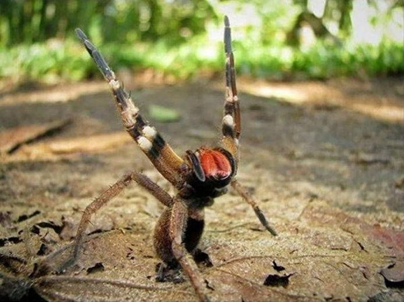

Этот ядовитый обитатель американских тропиков Южной и Центральной части попал в Книгу рекордов Гиннеса в 2010 году и получил почетное знание – самый ядовитый паук мира. В составе яда «странника» был обнаружен мощнейший нейротоксин, вызывающий после укуса утрату контроля над мышцами и нарушение дыхательной функции. Человека попросту парализует, и он умирает от удушья. Укус не слишком болезненный, но яд сразу вызывает заражение лимфатической системы. Если яд попал в кровь, то в 85% у человека отказывает сердце. У пораженного ядом человека наблюдается сильное окоченение, а у мужчин может быть приапизм. Есть противоядие, дающее небольшой шанс выживания жертвы паука, так как действие яда очень мощное.
Встречается бродячий паук только в Америке, да и то чаще всего в тропических и субтропических регионах. К бразильским бродячим паукам относят два типа — это прыгающие пауки, которые преследуют свою добычу отрывистыми прыжками, и бегающие пауки. Последние очень быстро бегают, но ведут ночной образ жизни, а днем — сидят под камнями или прячутся в каком-то другом месте, в том числе и в домах людей. Бразильский странствующий паук любит лакомиться бананами, не упустит возможности залезть в коробку с этим фруктом. За свое пристрастие этот паук получил еще одно имя — банановый паук. Но основной пищей для него все-таки являются не фрукты. Охотится он в основном на других пауков и насекомых, а также случается, что нападает на птиц и ящериц, которые превосходят его по размерам. Сам он довольно некрупный хищник — всего каких-то 10 см. Но маленькие размеры не мешают быть ему отличным охотником и серьезной проблемой для людей, а все оттого, что он способен при укусе выделять солидную дозу токсичного яда, который образуется на концах хелицер, в каналах ядовитых желез. Может быть, яд странствующего паука менее опасен, чем яд змей. Взрослого здорового человека он вряд ли сможет убить — только вызовет серьезную аллергическую реакцию, с которой современная медицина в состоянии быстро справиться. Но если бразильский странствующий паук укусит больного человека или маленького ребенка, то яд может подействовать быстрее, чем приедет скорая помощь.
Вот такой красивый паучок)